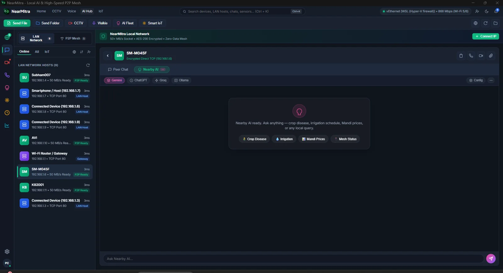
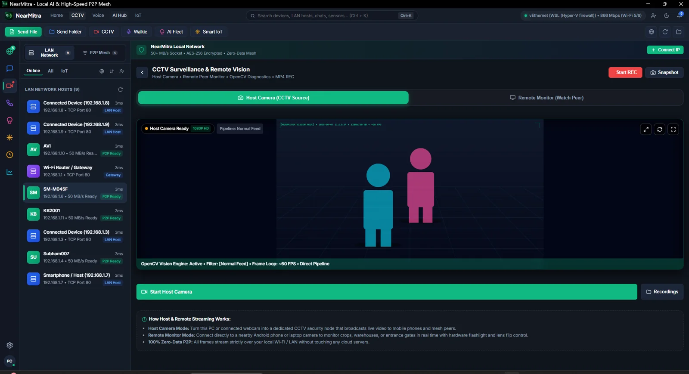
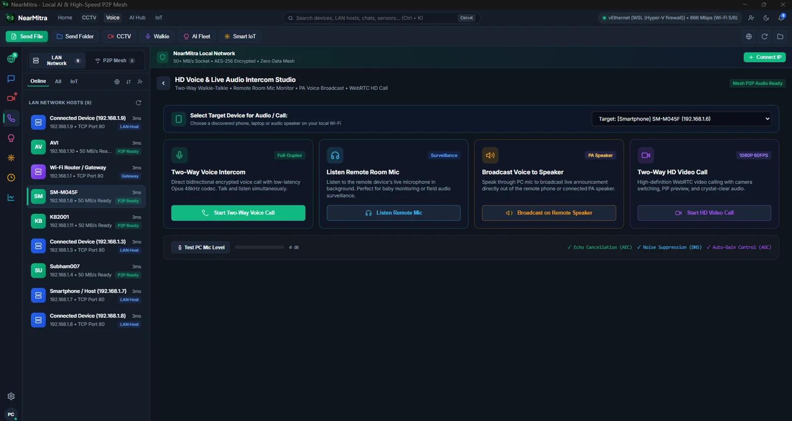
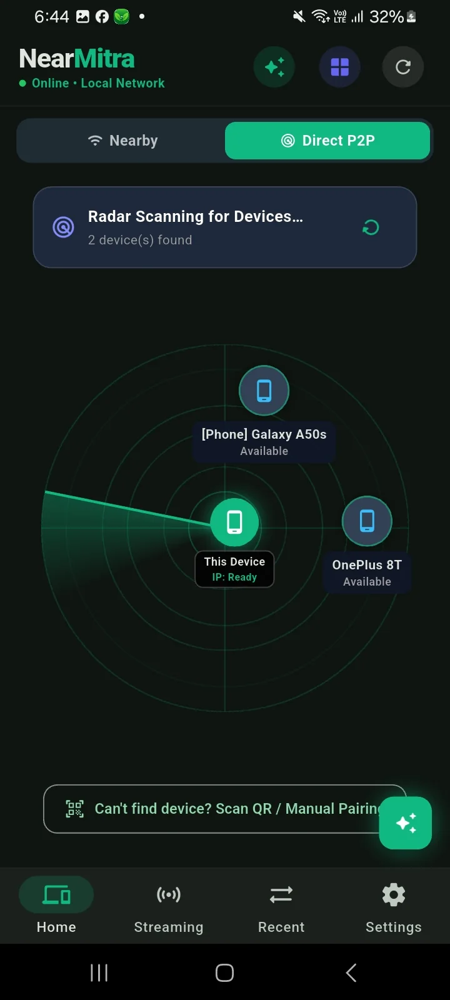
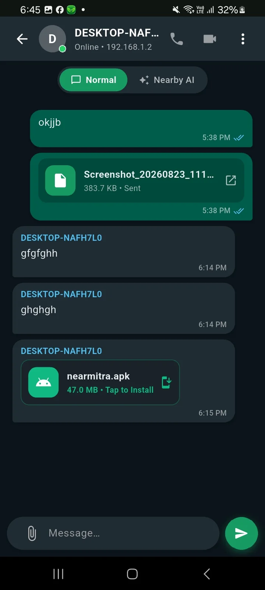
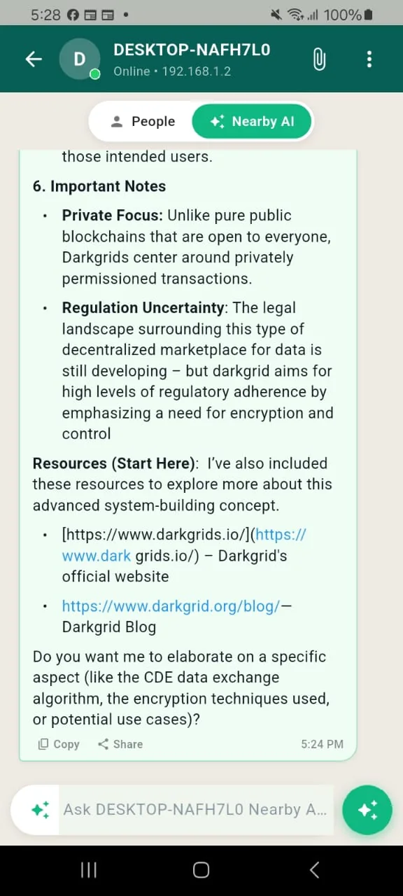
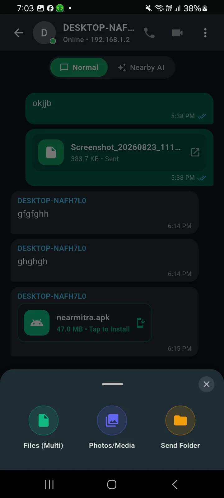
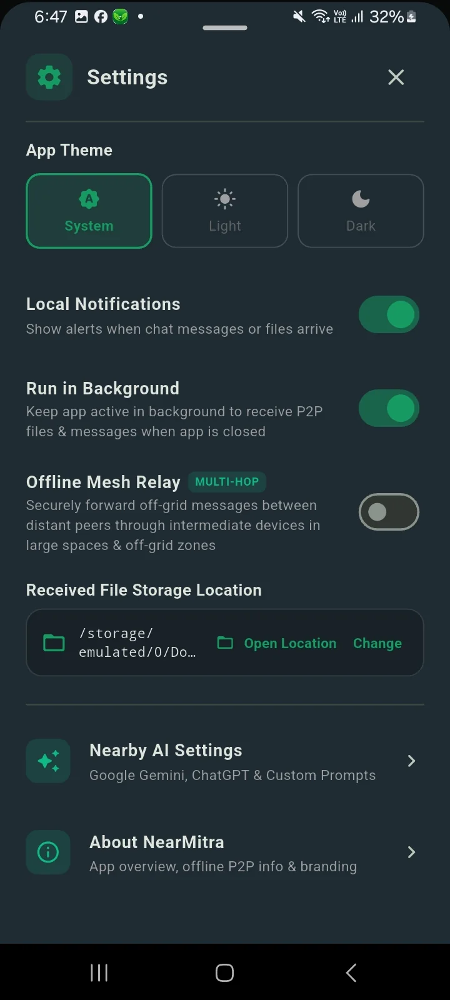

TAKE A LOOK AROUND.
The app,
in its own pixels.
Explore real screenshots from the project. Filter by platform and select an image for a closer look.
WATCH NEARMITRA IN ACTION
See how it all connects.
Watch the NearMitra usage walkthrough, then explore the Android and Windows screenshots below.
Playing this video connects to YouTube. If the player is unavailable, use the YouTube link above.
THE PRODUCT GALLERY
A window into NearMitra.
Screenshots show earlier UI versions; current builds may look different. Historical speed, encryption and AI vision labels are not implementation or performance guarantees.
 View full screenshot
View full screenshot Desktop device dashboard
Local network discovery and connected-device actions.
 View full screenshot
View full screenshot Conversations & transfers
Device chat with sharing controls.


View full screenshotNearby AI workspace
A desktop interface for configured AI engines.


View full screenshotCamera-stream workspace
Viewing an approved device stream.


View full screenshotVoice & audio
Desktop voice and audio controls.


View full screenshotP2P discovery radar
Nearby devices on the Android radar.


View full screenshotChat & sharing
A device conversation on Android.


View full screenshotNearby AI on Android
An Android interface for a shared AI engine.


View full screenshotChoose what to send
Android file and folder selection.


View full screenshotYour app settings
Android settings and background controls.
YOUR NEXT CONNECTION STARTS HERE.
Bring your devices
a little closer.
For Android & Windows. Built in the open.